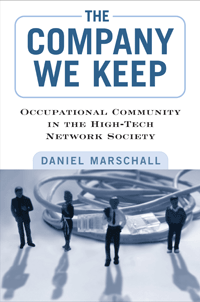

How computer technologists developed an occupational identity that persists in cyberspace long after the dot-com bubble has burst
How computer technologists developed an occupational identity that persists in cyberspace long after the dot-com bubble has burst


 How computer technologists developed an occupational identity that persists in cyberspace long after the dot-com bubble has burst
How computer technologists developed an occupational identity that persists in cyberspace long after the dot-com bubble has burst

|  |
The Company We KeepOccupational Community in the High-Tech Network SocietyDaniel Marschallpaper EAN: 978-1-43990-756-6 (ISBN: 1-4399-0756-0) |
"The Company We Keep traces the rise and fall of a high-tech software firm in ways that illuminate our current moment, in particular how an organizational community of hardcore software developers shapes the digital architectures through which we increasingly live. It is a strong contribution to the emerging literature on technologists and how they organize their work."
—Thomas M. Malaby, University of Wisconsin-Milwaukee, and author of Making Virtual Worlds: Linden Lab and Second Life
At the birth of the Internet Age, computer technologists in small, aggressive software development companies became part of a unique networked occupational community. They were creative, team-oriented, and enthusiastic workers who built �boundaryless careers,� hopping from one employer to another.
In his absorbing ethnography The Company We Keep, sociologist Daniel Marschall immerses himself in IntenSivity, one such technological workplace. Chronicling the employees' experiences, Marschall examines how these workers characterize their occupational culture, share values and work practices, and help one another within their community. He sheds light on the nature of this industry marked by highly skilled jobs and rapid technological change.
The experiences at IntenSivity are now mirrored by employees at Facebook and thousands of other cutting-edge, high-tech start-up firms. The Company We Keep helps us understand the emergence of virtual work communities and the character of the contemporary labor market at the level of a small enterprise.
Excerpt available at www.temple.edu/tempress
"This is a fascinating study... It adds significantly to the body of case studies that are already shedding light on high-tech work. In addition to the longitudinal and founder-based perspective, the book provides telling descriptions and analyses of a number of other issues.... [T]his is a sharply written ethnography with significant insights in every chapter into the ongoing puzzle that is occupational community in the high-tech network society."
—Contemporary Sociology
Acknowledgments
Prologue: First Encounters of a Techie Kind
1. Network Society and Occupational Community
2. Setting: A �Monster Soft Dev Shop� in Silicon Swamp
3. Constructing Occupational Identity
4. Forging Bonds on Projects and Products
5. Language and the Persistence of Community
Epilogue: Remembering the �Wild Ride� . . .and What Happened to Its Participants
Notes
References
Index
Daniel Marschall is a Professorial Lecturer in Sociology at The George Washington University. He works for the AFL-CIO as the Federation's Policy Specialist for Workforce Issues.
Sociology
Labor Studies and Work
Business/Economics
© 2015 Temple University. All Rights Reserved. This page: http://www.temple.edu/tempress/titles/2175_reg.html.